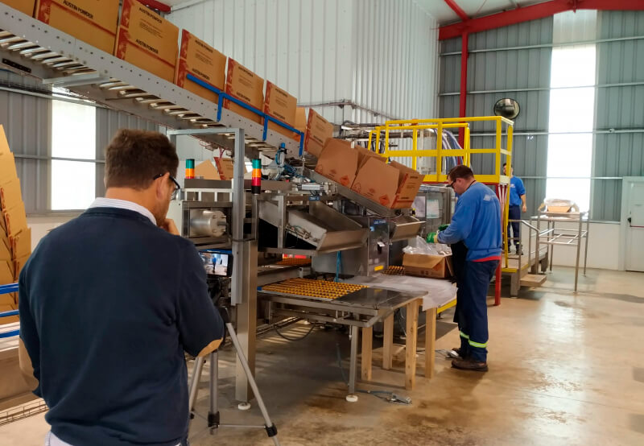

Contamos con un staff de ingenieros especialistas en evaluaciones ergonómicas, capaces de
aplicar los métodos vigentes más avanzados con el fin de cubrir sus necesidades y
cumplimentar la legislación vigente: Resolución Nº 886/15. Estudiamos la relación sistémica
entre persona y trabajo para mejorar la calidad de vida laboral y la eficiencia en el
desempeño de las tareas. Para esto aplicamos metodologías de mejora ergonómicas, utilizando
un software de desarrollo propio que ejecuta distintos métodos de evaluación ergonómica
reconocidos a nivel internacional. Nuestros profesionales además son miembros de la
Asociación de Ergonomía Argentina (ADEA) y son profesores titulares de la Cátedra Ergonomía
en la Licenciatura de Higiene y Seguridad en el Trabajo en la UTN-FRC. Los métodos
utilizados se encuentran enmarcados de acuerdo a la Resolución Nº 886/15. Además contamos
con equipos de medición de última generación con certificados de calibración al día:
dinamómetros, balanzas, equipos de vibraciones para mano/brazo y cuerpo entero, equipos de
carga térmica, estrés por frío, iluminación y otros, para realizar las evaluaciones más
eficientes del mercado.

Calcula tu Presupuesto
Acerca de Nosotros
Somos una consultora internacional dedicada a la Seguridad Laboral, Higiene Industrial,
Ergonomía y Medio Ambiente con más de 30 años de trayectoria y know how. Nuestra sede
central se encuentra en Córdoba, y poseemos oficinas en Buenos Aires, Montevideo (Uruguay)
y Asunción (Paraguay). Además, contamos con profesionales asociados en todas las
provincias argentinas. Con una perspectiva multiprofesional y un equipo de profesionales
altamente comprometido y capacitado, trabajamos diariamente para ofrecerle un servicio
competitivo y eficaz, brindado asesoramiento idóneo, seguimiento y apoyo para los
siguientes ítems: Garantizar la adecuación de los recursos implementados con la
legislación vigente. Disminuir los riesgos de accidentes y el absentismo/ausentismo
laboral, reduciendo así costos directos e indirectos para la empresa. Gestionar
responsablemente todos los aspectos preventivos, de tal forma que los trabajadores puedan
percibirlos claramente. Para Clientes corporativos con establecimientos en distintas
provincias, ofrecemos un Sistema online en donde pueden visualizarse, en cualquier
momento, todas las gestiones realizadas.